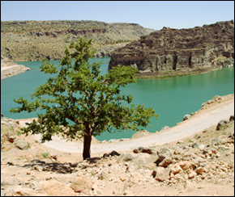
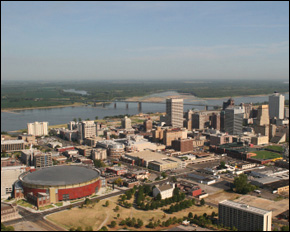
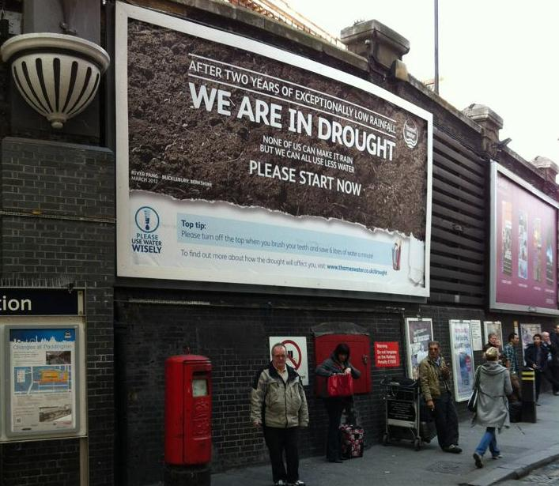
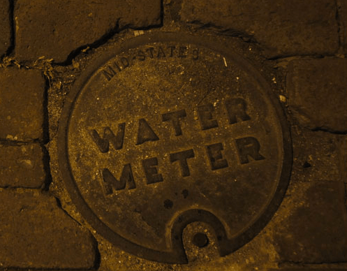

Iraq Demands More Water from Turkey, Syria
Three months after Turkey promised to release more water down the Tigris and Euphrates rivers, Iraq still struggles with its water supplies.Iraq’s Water Resources Minister Abdul Latif Rasheed said Thursday that Turkey had failed to hold to its promise and called for more coordinated actions among the countries sharing the watersheds,
Reuters reported.
Rasheed talked to the agency on the sidelines of a meeting between Turkish, Iraqi and Syrian ministers this week to discuss water sharing from the Tigris and Euphrates.
'It isn’t happening, and we want Turkey to implement that agreement,' he said, 'The amount of water we are getting is fluctuating.'
Turkey pledged in June to release at least 400 cubic meters of water per second from the Tigris and Euphrates, but Rasheed said that sometimes the water flow fluctuates to less than 200 cubic meters.
Turkey said that it had occasionally decreased the flow to less than the promised minimum when it was hard pressed to meet its own water demands during extreme droughts.Some Turkish officials said that Syria had also cut back its water release.
Sharing of the rivers has been a controversial diplomatic issue for Iraq, Turkey and Syria for years.Iraq, which lies downstream, has previously blamed its upstream neighbors for choking the waterways with dams.
A mostly desert area, Iraq is heavily dependent on the rivers for drinking, agriculture and electricity.The farm sector is already suffering from decades of war and sanctions, and three consecutive years of severe drought.
Read more here.
Posted On: 2009-09-12T00:00:00
Posted By: Nadya Ivanova




Content Date: 2009-09-12
Download Date: 2021-05-13
Document ID: L0C04BQPX